Design and Development of a Multispectral Imagery System for Land Cover and Land Use Monitoring in Colombia
Master in Applied Physics · Universidad EAFIT
School of Applied Sciences and Engineering · HuMath Space Systems
Portada
- Autor: Sebastian Carmona Estrada
- Directora: Prof. Dr. Eng. Olga Lucia Quintero Montoya
- Programa: Master in Sciences / Master in Applied Physics
- Facultad: School of Applied Sciences and Engineering
- Universidad: Universidad EAFIT
- Grupo: HuMath Space Systems
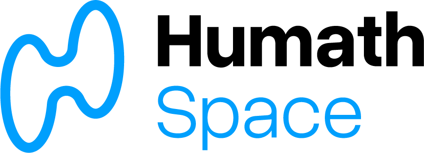
1. Planteamiento del problema
Problema central
- En 2024 Colombia registró 113.608 ha deforestadas, con concentración crítica en el arco amazónico (IDEAM, 31-jul-2025).
- Entre enero-septiembre de 2025 en la Amazonía se estimaron 36.280 ha, y 98 % del fenómeno se concentró en Meta, Caquetá, Guaviare y Putumayo (MinAmbiente, 30-dic-2025).
- El mapa oficial nacional de coberturas (periodo 2020) está en escala 1:100.000; esta escala es útil para análisis nacionales, pero limitada para decisiones finas operativas/prediales.
Brecha tecnológica en Colombia
- La nubosidad persistente reduce a menos de 5 escenas satelitales libres de nubes por mes en muchas zonas.
- La resolución de misiones gratuitas no captura variabilidad intraparcela: Landsat-8 (30 m) y Sentinel-2 (10 m).
- Las cámaras multiespectrales comerciales siguen siendo costosas (normalmente > 7000 USD).
- A nivel local no hay una solución VIS/NIR diseñada y fabricada en Colombia con costo objetivo < 1500 USD y calibración rigurosa.
Pregunta de investigación
- ¿Cómo desarrollar y caracterizar un sistema óptico multiespectral VIS-NIR, de bajo costo y baja masa, para plataformas aéreas que opere bajo condiciones atmosféricas tropicales en Colombia?
Hipótesis de trabajo
- Integrar una óptica VIS de 8.5 mm f/1.8 y una NIR de 8 mm f/2.5 con sensores AR0521 (VIS) y AR0522 (NIR).
- Aplicar calibración geométrica basada en ISO 12233 y calibración radiométrica mediante combinaciones de filtros caracterizadas en laboratorio.
- Con ello se espera lograr GSD <= 2 m a 5 km, error radiométrico intercanal < 5 %, costo de materiales <= 1500 USD y masa total < 2 kg.
Objetivo general y objetivos específicos
- Objetivo general: diseñar, construir, calibrar y caracterizar un sistema óptico multiespectral VIS/NIR para integración en plataforma aérea.
- Definir la arquitectura óptica y mecánica bajo restricciones de masa, volumen, resolución y costo.
- Procurar e integrar sensores, lentes, filtros y electrónica de adquisición/almacenamiento.
- Validar desempeño en pruebas de laboratorio y de vuelo.
- Determinar respuesta geométrica y espectral para soportar productos georreferenciados de monitoreo ambiental.
Alcance y limitaciones
- Rango espectral objetivo del sistema: 400-900 nm.
- Restricciones de integración: volumen aproximado 100 x 100 x 150 mm y masa total < 2 kg.
- Ventana operativa evaluada: 50-5000 m de altitud sobre el terreno.
- El trabajo se centra en diseño, integración y calibración del sistema; no incluye desarrollo de modelos de clasificación o estimación de variables biofísicas.
2. Diseño del dispositivo (Capítulo 2)
Propósito del diseño
- Se partió de una matriz de 8 sistemas ópticos para seleccionar la configuración VIS/NIR con mejor desempeño para la misión C3.
- El proceso combinó simulación óptica, análisis de restricciones de integración y evaluación costo-rendimiento.
- El criterio final fue técnico-operativo: resolución suficiente, cobertura útil, bajo consumo y factibilidad de fabricación local.
Requerimientos ópticos y criterios de diseño
- Resolución espacial objetivo: MTF >= 40 lp/mm al 30 % de contraste.
- Cobertura: campo de visión útil para misiones entre 50 m y 5000 m AGL.
- Restricciones de integración C3: masa, volumen, autonomía y costo.
- Condición de operación: iluminación ambiental diurna.
| Parámetro | Requisito de diseño |
|---|---|
| Masa del payload | <= 2 kg |
| Dimensiones máximas | 100 x 100 x 150 mm |
| Tiempo de misión | <= 3 h |
| MTF (30 % contraste) | >= 40 lp/mm |
| Resolución @ 50 m | <= 7.35 cm |
| Resolución @ 1000 m | <= 1.47 m |
| Resolución @ 5000 m | <= 7.35 m |
| Presupuesto objetivo | <= 1500 USD |
Terminología usada en el diseño óptico
| Término | Significado práctico |
|---|---|
| MTF | Capacidad de preservar contraste en detalle fino; se usa 30 % como punto de comparación. |
| AFOV | Campo angular de visión; mayor AFOV implica más cobertura por imagen. |
| FOV | Cobertura lineal en tierra para una altura dada. |
| Distancia focal | Controla aumento y cobertura; focal larga mejora detalle y reduce cobertura. |
| Apertura (f/#) | Controla entrada de luz y desempeño en frecuencias espaciales altas. |
Plataforma de adquisición y procesamiento
- Núcleo de procesamiento: Raspberry Pi 4B (8 GB) por costo, modularidad y ecosistema de software.
- Cámaras Alvium conectadas por USB 3 con stack en Python para adquisición y control.
- Se descartó GPU dedicada (Jetson) en esta versión por consumo, costo y complejidad.
- Arquitectura preparada para migrar a inferencia en borde en iteraciones futuras.
- Filosofía de diseño: plug-and-play, mantenible y replicable.
- Integración directa VIS/NIR + georreferenciación.
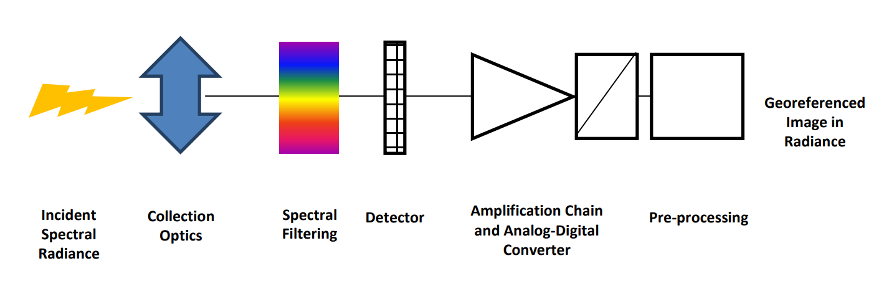
Matriz de objetivos candidatos (8 sistemas)
| Sistema | Objetivo | Focal [mm] | AFOV [deg] | Apertura | MTF@30% [lp/mm] | Peso [g] |
|---|---|---|---|---|---|---|
| 1 | 16 mm HPr (EO) | 16 | 42.2 | f/16 | 62 | 138 |
| 2 | 50 mm HPr (EO) | 50 | 10.1 | f/2.8 | 180 | – |
| 3 | 25 mm HPr (EO) | 25 | 27.8 | f/1.8 | 40 | 78 |
| 4 | 16 mm HPr (EO) | 16 | 42.2 | f/1.8 | 128 | 138 |
| 5 | 4 mm Basler | 4 | 109.0 | f/1.8 | – | – |
| 6 | 8 mm HEO NIR (EO) | 8 | 29.9 | f/2.5 | 120 | 4 |
| 7 | 8.5 mm Cr (EO) | 8.5 | 28.2 | f/1.8 | 85 | 60 |
| 8 | 12.5 mm Rugged Blue (EO) | 12.5 | 19.4 | f/2.5 | 150 | 5 |
Lectura técnica de la matriz de objetivos
- Sistema 2: máxima nitidez teórica (MTF alta), pero AFOV muy estrecho.
- Sistema 5: cobertura extrema, pero sin curva MTF reportada por fabricante.
- Sistemas 6 y 7: compromiso robusto entre AFOV, MTF, masa y costo.
- En régimen aéreo (hiperfoco), la profundidad de campo deja de ser limitante; domina el balance apertura-peso-costo.
Preselección de sensores de imagen
- Parámetros evaluados: resolución, tamaño de píxel, tipo de obturación, bits, masa y consumo.
- AR0521/AR0522 fueron priorizados por consumo bajo (~2.2 W) y costo.
- Se asumió rolling shutter como compromiso frente a global shutter por restricciones del proyecto.
| Sistema | Sensor | H x V [px] | Pixel [um] | Shutter | Bits | Peso [g] | Potencia [W] |
|---|---|---|---|---|---|---|---|
| 1,3,4 | Alvium U-2040 (IMX541) | 4512 x 4512 | 2.74 | Global | 12 | 65 | 3.9 |
| 2 | Alvium U-2050 (IMX183) | 5496 x 3672 | 2.40 | Rolling | 10 | 65 | 3.2 |
| 5 | Basler acA1920 (IMX249) | 1920 x 1200 | 5.86 | Global | 12 | 90 | 3.9 |
| 6 | Alvium U-501m (AR0522) | 2592 x 1944 | 2.20 | Rolling | 10 | 65 | 2.2 |
| 7,8 | Alvium U-500c (AR0521) | 2592 x 1944 | 2.20 | Rolling | 10 | 60 | 2.2 |
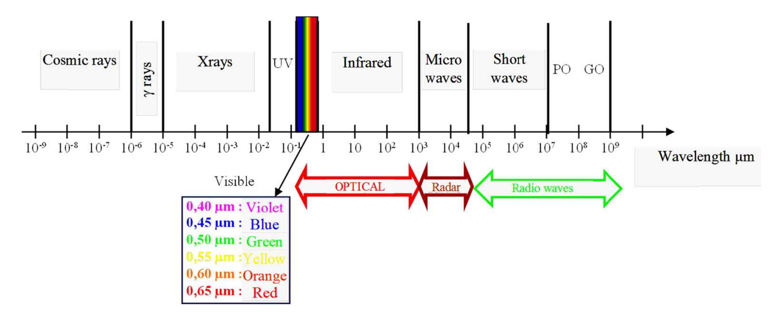
Modelo teórico: FOV y resolución en tierra
\[ AFOV = 2\tan^{-1}\left(\frac{H_{sensor}}{2f}\right) \]
\[ FOV = 2 \cdot WD \cdot \tan\left(\frac{AFOV}{2}\right), \quad PMAG=\frac{H_{sensor}}{FOV} \]
\[ f_{obj}=f_{im}\cdot PMAG,\quad f_{sensor}=\frac{1}{2s} \]
\[ \Delta_{ground}=\frac{1}{2f_{obj}}\cdot\frac{1}{1000},\quad \Delta_{pix}=\frac{1}{2f_{sensor}}\cdot\frac{1}{1000} \]
- Se evaluaron altitudes de 50 m, 1000 m y 5000 m para los 8 sistemas.
Resultados teóricos por altitud (sistemas finalistas)
| Altitud | FOV Sys.6 (NIR) | \(\Delta_{MTF}\) Sys.6 | FOV Sys.7 (VIS) | \(\Delta_{MTF}\) Sys.7 |
|---|---|---|---|---|
| 50 m | 26.73 m | 1.9 cm | 25.16 m | 3.4 cm |
| 1000 m | 534.6 m | 39.1 cm | 503.2 m | 69.2 cm |
| 5000 m | 2673 m | 1.95 m | 2516 m | 3.46 m |
| Sistema | FOV @ 5000 m | \(\Delta_{MTF}\) @ 5000 m | Lectura de diseño |
|---|---|---|---|
| 2 | 881 m | 0.186 m | Muy alta resolución, baja cobertura |
| 4 | 3863 m | 1.221 m | Buen compromiso técnico, costo alto |
| 6 | 2673 m | 1.953 m | Balance costo-masa-resolución |
| 7 | 2516 m | 3.460 m | Complemento VIS para fusión multicanal |
Tendencias obtenidas en la simulación
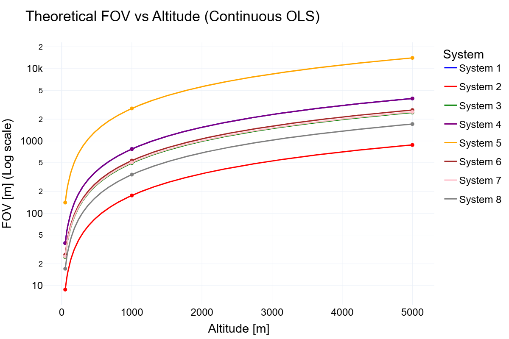
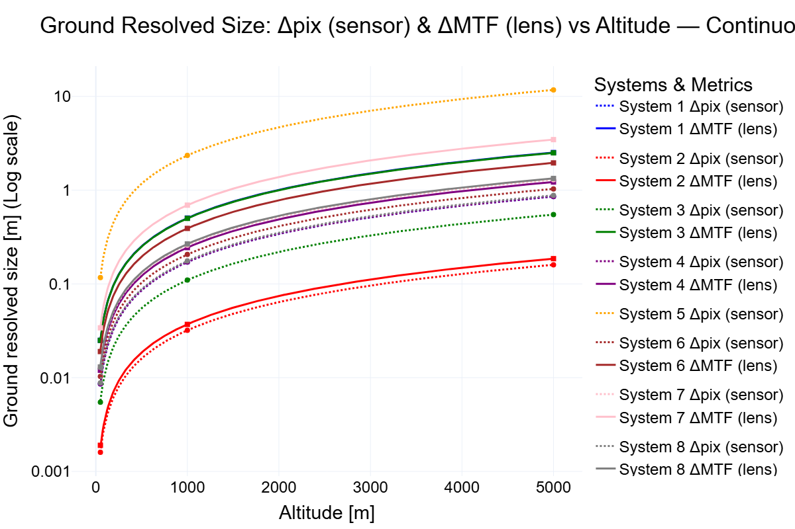
- En todos los casos: \(\Delta_{MTF} > \Delta_{pix}\), por limitación óptica sobre el límite de muestreo del sensor.
- Focal larga: más nitidez y menos cobertura.
- Focal corta: más cobertura y menos nitidez.
- La pareja 6-7 mantiene geometría similar, favoreciendo el registro VIS/NIR.
Selección final y justificación de diseño
- Selección final: Sistema 6 (NIR) + Sistema 7 (VIS).
- Cumple simultáneamente cobertura, costo, masa y consumo para misión C3.
- Permite integración multiespectral con desalineamiento reducido entre canales.
- Define la línea base para procura, construcción e integración del capítulo siguiente.
| Canal | Sistema final | Lente | Sensor | Costo aproximado (sensor+lente) |
|---|---|---|---|---|
| NIR | 6 | 8 mm f/2.5 | AR0522 | 541 USD |
| VIS | 7 | 8.5 mm f/1.8 | AR0521 | 777 USD |
| Indicador global | Resultado |
|---|---|
| Masa de payload (meta <= 2 kg) | Factible |
| Presupuesto óptico (meta <= 1500 USD) | Cumplido |
| Ventana operativa 50-5000 m | Cumplida |
3. Procura y construcción del dispositivo (Capítulo 3)
Procura de componentes y estrategia de integración
- La procura priorizó componentes disponibles comercialmente, costo controlado y compatibilidad mecánica.
- Se articuló una estrategia colaborativa EAFIT-KTH para integrar plataforma aérea y payload.
- La financiación de componentes ópticos/electrónicos se apalancó desde el proyecto 4DAir.
- La fabricación e integración se ejecutó con enfoque iterativo para reducir riesgo técnico.
| Sub-sistema | Decisión técnica | Razón principal |
|---|---|---|
| Cámara VIS | Alvium U-500c + 8.5 mm | Balance resolución/costo |
| Cámara NIR | Alvium U-501m + 8 mm | Cobertura NIR y bajo peso |
| Cómputo | Raspberry Pi 4 | Integración simple y robusta |
| Carcasa | PET-G impreso 3D | Resistencia y manufactura local |
Construcción de sistemas ópticos VIS y NIR
- Sistema NIR: U-501m + lente 8 mm f/2.5 + filtro pasabanda 850 nm.
- Sistema VIS: U-500c + lente 8.5 mm + filtro UV/IR cut para aislar visible.
- Diseño modular para facilitar mantenimiento, reemplazo y ajuste.
- Conexión USB directa a la unidad de adquisición para simplificar cableado.
| Canal | Sensor | Lente | Filtro | Resolución nativa |
|---|---|---|---|---|
| VIS | Alvium U-500c (AR0521) | 8.5 mm f/1.3 | UV/IR-cut (370-750 nm) | 2592 x 1944 |
| NIR | Alvium U-501m (AR0522) | 8 mm f/2.5 | BP 850 nm (FWHM 50 nm) | 2592 x 1944 |
CAD y ensamblaje mecánico del prototipo
- El encapsulado se desarrolló en PET-G por su rigidez, resistencia y estabilidad térmica.
- Integración mecánica dentro de la bahía del C3 sin rediseño estructural de aeronave.
- Masa final del dispositivo: 1810 g (dentro del requisito <= 2 kg).
- Arquitectura interna: módulo VIS, módulo NIR, cómputo, energía y sensado auxiliar.
| Parámetro mecánico | Valor |
|---|---|
| Material de carcasa | PET-G |
| Masa final del payload | 1810 g |
| Restricción de masa | <= 2 kg |
| Volumen objetivo | 100 x 100 x 150 mm |
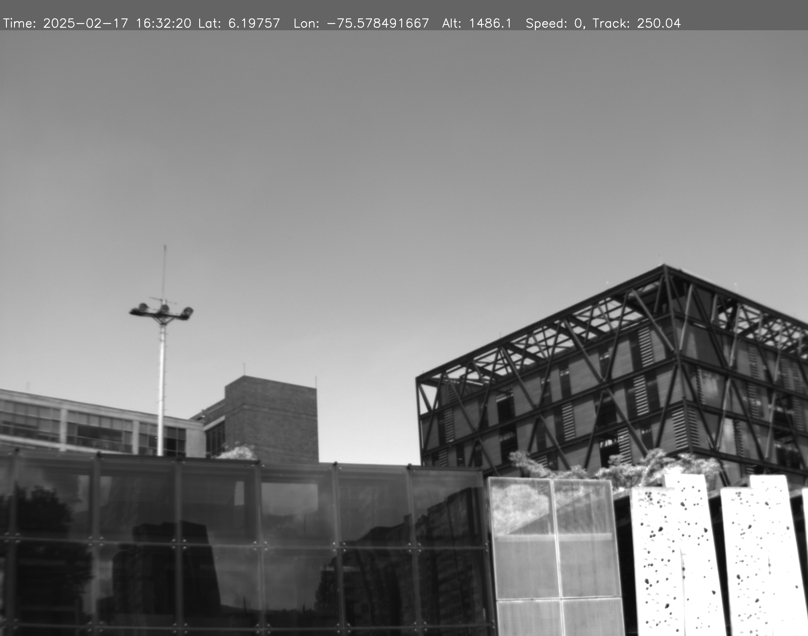
Sistema de adquisición y control
- Se implementó un flujo productor-consumidor para adquisición paralela de cámaras.
- El pipeline integra captura, mosaico VIS/NIR, superposición de telemetría y guardado.
- El sistema soporta captura de imagen fija y video durante operación en tierra o vuelo.
- Rendimiento operativo reportado: hasta 24 FPS con registro de metadatos.
| Comando | Función |
|---|---|
s |
Captura imagen (JPEG) |
v |
Inicia/detiene grabación (AVI) |
Enter |
Cierre controlado del script |
Script de operación, configuración GNSS y sincronización de datos
- Servicio de arranque para configuración determinística GNSS en cada boot.
- Ajuste de enlace serie y perfiles NMEA para georreferenciación estable.
- Servicio de sincronización automática a nube para respaldo de videos.
- Diseño orientado a operación autónoma y tolerancia a fallos.
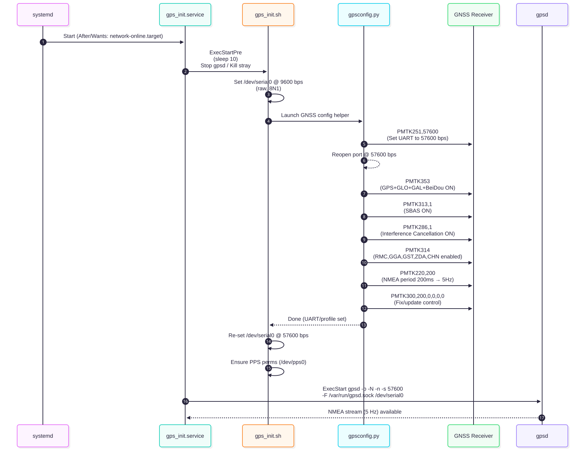

Operación remota del dispositivo QBee
- Acceso remoto en red local mediante VNC.
- Acceso remoto global mediante Raspberry Pi Connect.
- Supervisión de captura y telemetría en tiempo real desde dispositivos externos.
- Actualización continua de software vía repositorio privado y despliegue remoto.
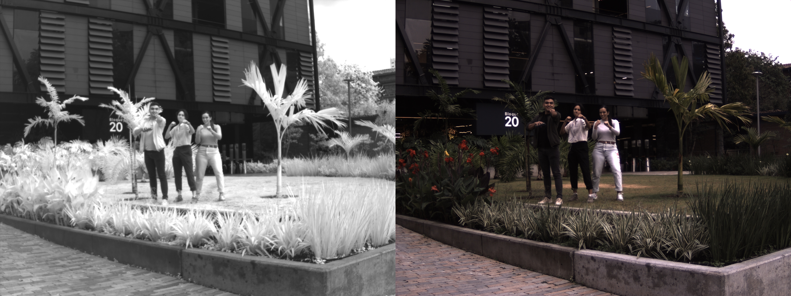
4. Pruebas en campo (Capítulo 3)
Pruebas en tierra
- Validación funcional en condiciones controladas antes de cada campaña aérea.
- Verificación de inicio automático, captura de imagen, grabación de video y estabilidad.
- Pruebas con fuente directa y batería interna del dispositivo.
- Confirmación de operación simultánea de canales VIS/NIR y overlay GPS.
Pruebas en condiciones extremas de superficie
- Se ejecutaron pruebas durante campaña antártica (dic 2024 - mar 2025).
- Rango térmico de operación probado cercano a -6 C a 2 C.
- Se observaron fallos intermitentes de arranque y de inicio de grabación.
- Aun así, se obtuvieron capturas válidas que confirmaron viabilidad con mejoras térmicas.
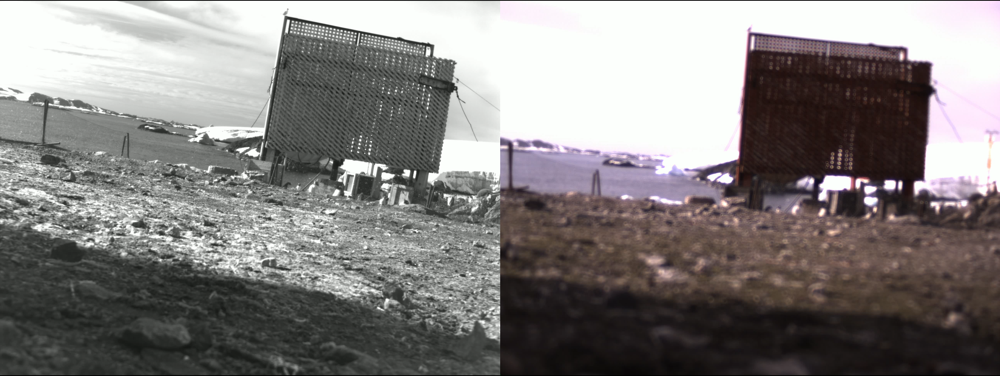
Pruebas de vuelo
- Vuelo 1: Cessna 208 Caravan (~5000 ft), operación estable y monitoreo remoto.
- Vuelo 2: T-27 Tucano, operación autónoma bajo maniobras de hasta 4g.
- No se reportaron caídas de adquisición durante los ensayos.
- Se identificó sensibilidad de desempeño a condiciones de iluminación al atardecer.
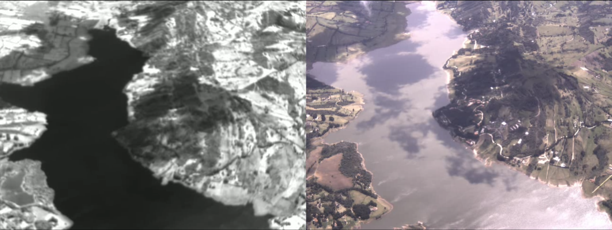
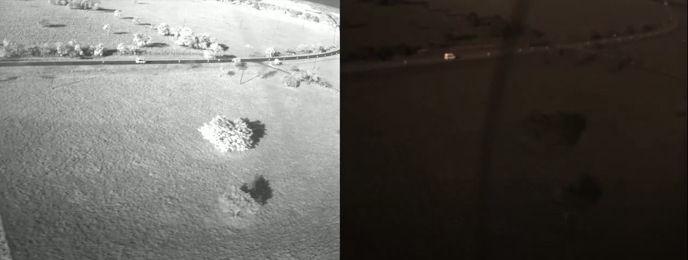
Hallazgos operativos y lecciones aprendidas
- El sistema demostró robustez mecánica y funcional en escenarios reales.
- Factores críticos detectados: temperatura, saturación radiométrica y enfoque óptico.
- El software multihilo fue estable por más de 30 horas continuas.
- Se recomienda incorporar aislamiento térmico, control de saturación y watchdog de servicios.
| Escenario | Resultado observado | Acción recomendada |
|---|---|---|
| Tierra (diurno) | Operación estable | Mantener protocolo actual |
| Frío extremo | Fallos intermitentes | Aislamiento y preheating |
| Vuelo con maniobras | Estable hasta 4g | Validar con más campañas |
| Atardecer/baja luz | Degradación VIS | Ajuste dinámico de exposición |
5. Trabajo de laboratorio y caracterización óptica (Capítulo 4)
Alcance técnico del capítulo
- La validación experimental se divide en dos bloques: geométrico (FOV, AFOV, MTF, GRD) y espectral (respuesta relativa VIS/NIR).
- El objetivo es cerrar la trazabilidad desde diseño teórico hasta desempeño medido bajo protocolo de laboratorio.
- Se reportan ecuaciones, configuración de adquisición, control de incertidumbre y discrepancias frente a teoría.
| Bloque | Variable principal | Método aplicado |
|---|---|---|
| Geométrico | FOV/AFOV | ISO 12233 + ajuste Deming |
| Geométrico | MTF/GRD | Slanted-edge (ESF->LSF->FFT) |
| Espectral | Sensibilidad relativa | Barrido de filtros y combinaciones |
Modelo geométrico y ajuste experimental
\[ AFOV = 2 \tan^{-1}\left(\frac{H}{2f}\right),\quad FOV(d)=2d\tan\left(\frac{AFOV}{2}\right) \]
\[ FOV = \beta_1\cdot WD + \beta_0 \]
- El ajuste FOV-WD se hizo con regresión Deming para incorporar error en ambas variables.
- Incertidumbre instrumental usada: orden de 1 mm en distancias de medición.
- Se midieron componentes horizontales y verticales para VIS (Sistema 7) y NIR (Sistema 6).
Datos medidos de FOV (base experimental)
| Test | NIR WD_H [m] | NIR FOV_H [m] | NIR WD_V [m] | NIR FOV_V [m] | VIS WD_H [m] | VIS FOV_H [m] | VIS WD_V [m] | VIS FOV_V [m] |
|---|---|---|---|---|---|---|---|---|
| 1 | 0.071 | 0.035 | 0.087 | 0.035 | 0.092 | 0.035 | 0.107 | 0.035 |
| 2 | 0.331 | 0.231 | 0.350 | 0.180 | 0.379 | 0.239 | 0.303 | 0.138 |
| 3 | 0.650 | 0.468 | 0.650 | 0.349 | 0.694 | 0.458 | 0.700 | 0.342 |
Ecuaciones ajustadas FOV-WD (Deming)
| Caso | Modelo |
|---|---|
| VIS-H | \(FOV=(0.7025\pm0.0045)\,WD-(0.0288\pm0.0021)\) |
| VIS-V | \(FOV=(0.5171\pm0.0029)\,WD-(0.0197\pm0.0013)\) |
| NIR-H | \(FOV=(0.7477\pm0.0031)\,WD-(0.0175\pm0.0013)\) |
| NIR-V | \(FOV=(0.5579\pm0.0034)\,WD-(0.0141\pm0.0015)\) |

Validación en altitudes de misión (predicción vs teoría)
| Altitud | VIS Pred H [m] | VIS Theo H [m] | VIS Pred V [m] | VIS Theo V [m] | NIR Pred H [m] | NIR Theo H [m] | NIR Pred V [m] | NIR Theo V [m] |
|---|---|---|---|---|---|---|---|---|
| 50 m | 35.10 | 33.54 | 25.84 | 25.16 | 37.37 | 35.64 | 27.88 | 26.73 |
| 1000 m | 702.50 | 670.87 | 517.08 | 503.15 | 747.70 | 712.80 | 557.90 | 534.60 |
| 5000 m | 3512.00 | 3354.35 | 2585.48 | 2515.76 | 3737.00 | 3564.00 | 2788.89 | 2673.00 |
- Error absoluto crece con altitud.
- Error relativo se mantiene casi constante, sugiriendo sesgo geométrico sistemático (distorsión/paralaje residual).

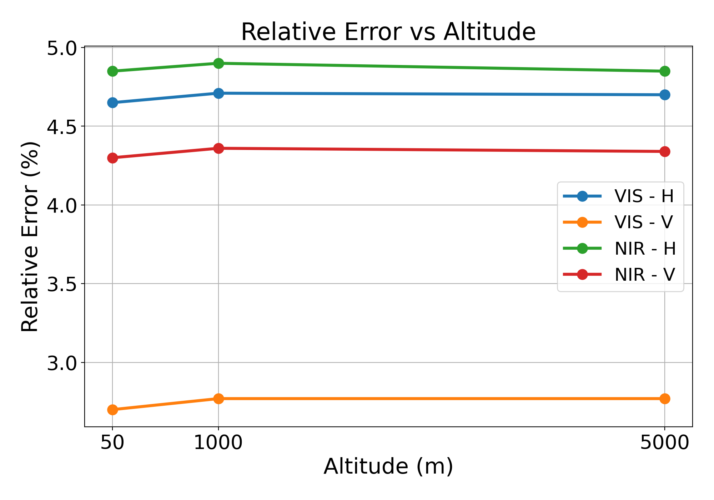
AFOV experimental vs AFOV teórico
\[ AFOV_{exp}=2\arctan\left(\frac{FOV}{2\,WD}\right),\quad \Delta_{rel}=\frac{|AFOV_{exp}-AFOV_{teo}|}{AFOV_{teo}}\times 100\% \]
| Caso (WD máximo) | AFOV exp [deg] | AFOV teórico [deg] | Error relativo |
|---|---|---|---|
| VIS-H | 36.52 | 37.10 | 1.6 % |
| VIS-V | 27.46 | 28.24 | 2.8 % |
| NIR-H | 39.60 | 39.30 | 0.8 % |
| NIR-V | 30.05 | 29.93 | 0.4 % |
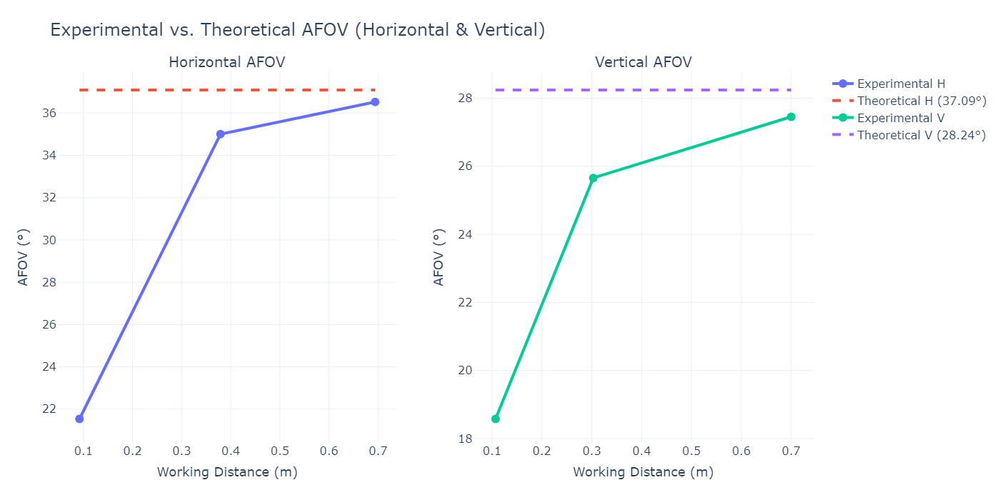
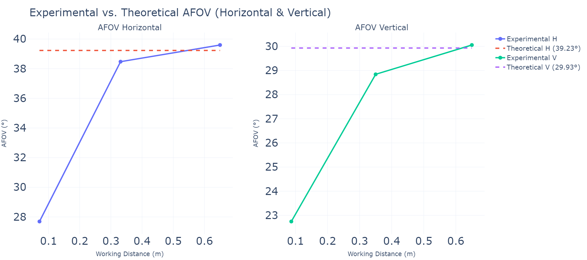
Magnificación primaria PMAG
| Altitud | PMAG VIS (Sys.7) | PMAG NIR (Sys.6) |
|---|---|---|
| 50 m | \(1.62\times10^{-4}\) | \(1.53\times10^{-4}\) |
| 1000 m | \(8.12\times10^{-6}\) | \(7.63\times10^{-6}\) |
| 5000 m | \(1.62\times10^{-6}\) | \(1.53\times10^{-6}\) |
- Diferencia VIS-NIR < 6 %, favorable para co-registro multiespectral.
Fundamento MTF y criterio de resolución
\[ g(x,y)=f(x,y)*h(x,y),\quad LSF(x)=\frac{d}{dx}ESF(x),\quad MTF(u)=\left|\mathcal{F}\{LSF(x)\}\right| \]
\[ MTF(f_{im})=0.30 \]
- Se usa corte al 30 % como compromiso entre contraste útil y piso de ruido.
- Este corte se convierte a resolución en terreno (GRD) usando PMAG.
Control de calidad MTF: limitación y mitigación experimental
- La carta ISO 12233 impresa en mate mostró histograma no ideal (picos espurios y dispersión).
- Se adoptó patrón empírico de borde inclinado con ROI 104 x 104 px.
- Se aplicó corrección de dark current y promedio de múltiples capturas para estabilizar ESF/LSF.
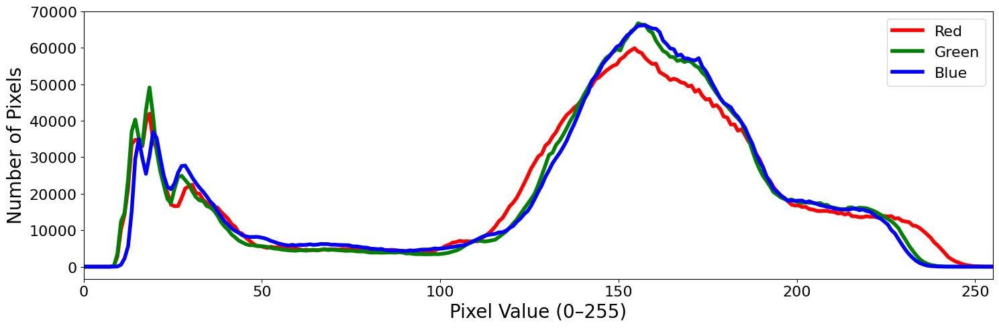
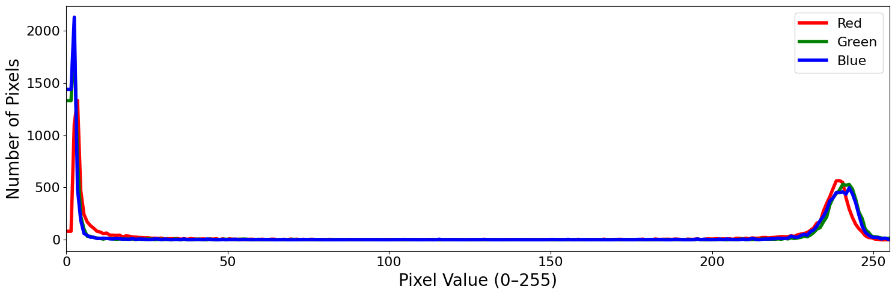
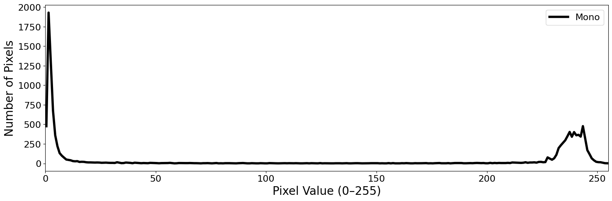
Resultados MTF y MTFA
\[ MTFA=\int_0^{f_c}MTF(f)\,df \]
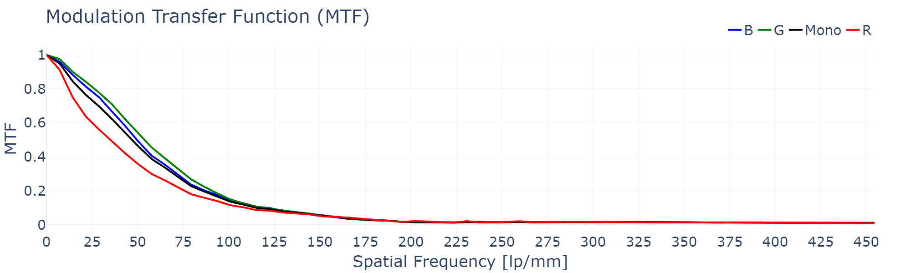
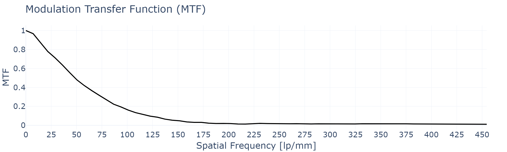
| Sistema/Canal | \(f_c\) [lp/mm] | MTFA [lp/mm] |
|---|---|---|
| VIS-R | 57.72 | 34.45 |
| VIS-G | 79.36 | 49.58 |
| VIS-B | 72.15 | 47.25 |
| VIS-Mono | 72.15 | 45.05 |
| NIR-Mono | 79.36 | 46.48 |
Frecuencia de corte medida vs especificación
| Sistema/Canal | \(f_{im,meas}\) [lp/mm] | \(f_{im,theo}\) [lp/mm] | \(\Delta\) [%] |
|---|---|---|---|
| VIS-R | 57.72 | 85 | -32.1 |
| VIS-G | 79.36 | 85 | -6.6 |
| VIS-B | 72.15 | 85 | -15.1 |
| VIS-Mono | 72.15 | 85 | -15.1 |
| NIR-Mono | 79.36 | 120 | -33.9 |
- VIS: canal G con mejor transferencia (consistente con enfoque y aberración cromática longitudinal).
- NIR: desviación grande frente a hoja de datos teórica, pero con desempeño real útil y estable.
GRD derivada de MTF
| Sistema | Canal | GRD @50 m [cm] | GRD @1000 m [cm] | GRD @5000 m [cm] | GRD @5000 m [m] |
|---|---|---|---|---|---|
| VIS | R | 5.35 | 106.68 | 534.72 | 5.35 |
| VIS | G | 3.89 | 77.59 | 388.91 | 3.89 |
| VIS | B | 4.28 | 85.34 | 427.78 | 4.28 |
| VIS | Mono | 4.28 | 85.34 | 427.78 | 4.28 |
| NIR | Mono | 4.12 | 82.57 | 411.79 | 4.12 |
| Sistema/Canal | Altitud | GRD teórica [cm] | GRD experimental [cm] | Discrepancia |
|---|---|---|---|---|
| VIS-Mono | 50 m | 3.40 | 4.28 | +25.9 % |
| VIS-Mono | 1000 m | 69.20 | 85.34 | +23.3 % |
| VIS-Mono | 5000 m | 346.00 | 427.78 | +23.6 % |
| NIR-Mono | 50 m | 1.90 | 4.12 | +116.8 % |
| NIR-Mono | 1000 m | 39.10 | 82.57 | +111.2 % |
| NIR-Mono | 5000 m | 195.30 | 411.79 | +110.8 % |
Lectura crítica de resultados geométricos
- VIS presenta desviación estable ~23-26 % respecto a modelo ideal.
- NIR presenta desviación >100 % contra teórico de fabricante, pero GRD real cercana a VIS.
- Conclusión técnica: el NIR no falla operativamente; el baseline teórico parece sobreestimado.
Marco radiométrico para bloque espectral
\[ Q_d(\theta,\lambda)=\frac{\pi}{4(F/\#)^2}\,O_e(\lambda)\,\Delta\lambda\,L(\lambda)\,\tau\,\cos^4\theta \]
\[ C\propto \int S(\lambda)\,L(\lambda)\,d\lambda,\quad R(\lambda_0)=\sum_{x,y}I_{filt}(x,y;\lambda_0) \]
- La tesis entrega respuesta espectral relativa (sin calibración absoluta trazable).
Procedimiento espectral de laboratorio
- Fuente: tungsteno ThorLabs OSL-2, validada con minispectrómetro Newport.
- Colimación: lente plano-convexa 25 mm y maximización de potencia en detector.
- Corrección de dark current del minispectrómetro: media 3513.97 counts.
- Impacto de offset sin corregir: ~6.4 % del fondo de escala del equipo.
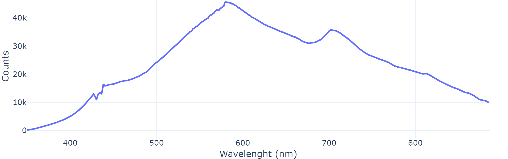
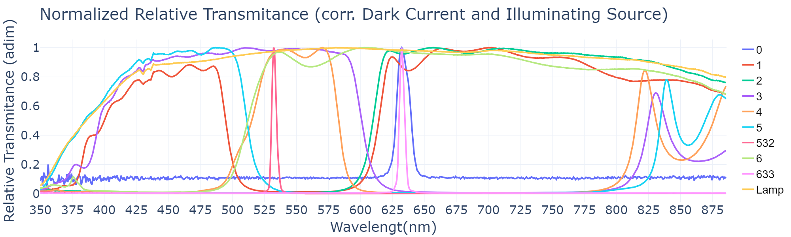
Diseño de bandas: combinaciones de filtros
- Se evaluaron combinaciones de 1, 2 y 3 elementos: 987 combinaciones.
- Curvas objetivo gaussianas en 10 centros espectrales (VIS + NIR).
- Métrica de selección: correlación de Pearson entre curva ideal y curva compuesta.
- Se combinó criterio numérico con validación experimental de transmitancia útil.
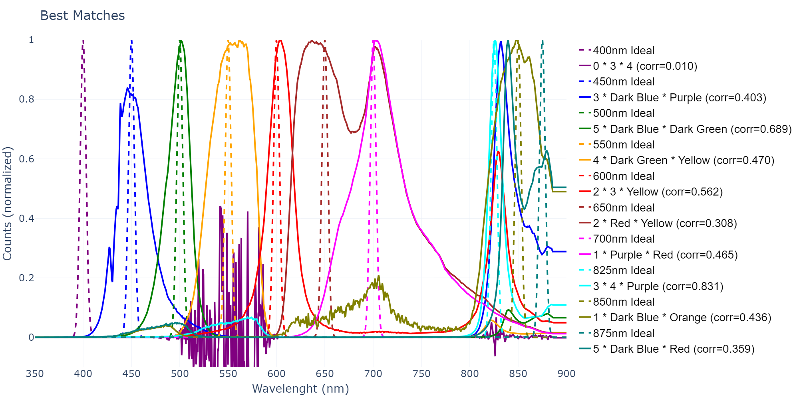
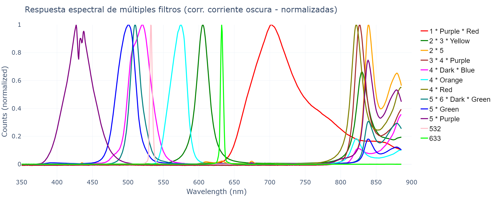
Longitud de onda central y FWHM (filtros finales)
| Combinación | \(\lambda_c\) [nm] | FWHM [nm] |
|---|---|---|
| 5 x Purple | 427.07 | 42.55 |
| 5 x Green | 501.15 | 30.24 |
| 5 x 6 x Dark Green | 509.78 | 17.57 |
| 4 x Dark Blue | 520.59 | 35.72 |
| 532 nm | 532.16 | 4.59 |
| 4 x Orange | 574.43 | 26.73 |
| 2 x 3 x Yellow | 605.39 | 20.21 |
| 633 nm | 632.19 | 5.05 |
| 1 x Purple x Red | 701.89 | 77.16 |
| 4 x Red | 822.38 | 20.19 |
| 3 x 4 x Purple | 826.43 | 18.98 |
| 2 x 5 | 839.43 | 17.14 |
Normalización de irradiancia por potencia óptica
| Combinación | Potencia [mW] |
|---|---|
| 5 x Purple | 70.4 |
| 1 x Purple x Red | 68.1 |
| 5 x Green | 53.3 |
| 4 x Orange | 43.1 |
| 2 x 3 x Yellow | 36.8 |
| 4 x Red | 26.5 |
| 2 x 5 | 26.2 |
| 4 x Dark Blue | 23.7 |
| 5 x 6 x Dark Green | 17.9 |
| 3 x 4 x Purple | 9.7 |
| 633 nm | 1.47 |
| 532 nm | 0.42 |
- Referencia de irradiancia en adquisición: 0.42 mW.
- El resto de combinaciones se atenuó para igualar ese nivel.
Configuración de captura para respuesta espectral
| Parámetro común | VIS | NIR |
|---|---|---|
| Gain | 0.0 | 0.0 |
| Gamma | 1.0 | 1.0 |
| Hue | 0.0 | – |
| Height [px] | 714 | 600 |
| Width [px] | 760 | 600 |
| OffsetX [px] | 900 | 1026 |
| OffsetY [px] | 600 | 650 |
| BalanceRatio_Red | 0.999 | – |
| BalanceRatio_Blue | 0.999 | – |
| Sistema | Filtro | ExposureTime [ms] |
|---|---|---|
| VIS | 1 x Purple x Red | 2859.217 |
| VIS | 2 x 3 x Yellow | 2916.174 |
| VIS | 3 x 4 x Purple | 11.391 |
| VIS | 4 x Dark Blue | 3998.348 |
| VIS | 4 x Orange | 888.522 |
| VIS | 5 x 6 x Dark Green | 5661.478 |
| VIS | 5 x Purple | 47000.520 |
| VIS | 5 x Green | 2870.609 |
| NIR | 4 x Red | 29.372 |
| NIR | 3 x 4 x Purple | 36.715 |
| NIR | 2 x 5 | 29.372 |
Dark current, repetibilidad y clipping
- Por configuración: 50 frames iluminados + 50 dark frames.
- Corrección por sustracción de dark master y promedio para reducir ruido aleatorio.
- En NIR, estadísticos dark permanecen bajos (media/varianza ~1e-3, máximo 1 count).
- Se verificó ausencia de saturación con análisis de cuantiles (\(q_{99.9}<255\) en 8 bits).
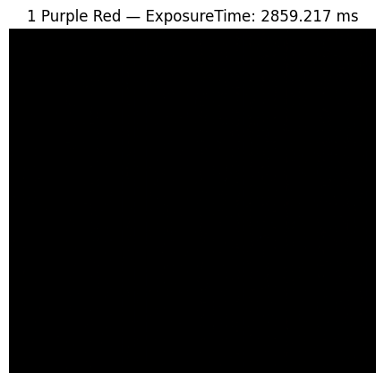
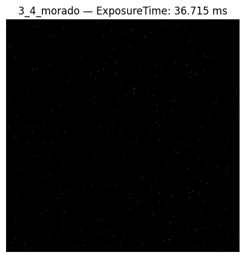
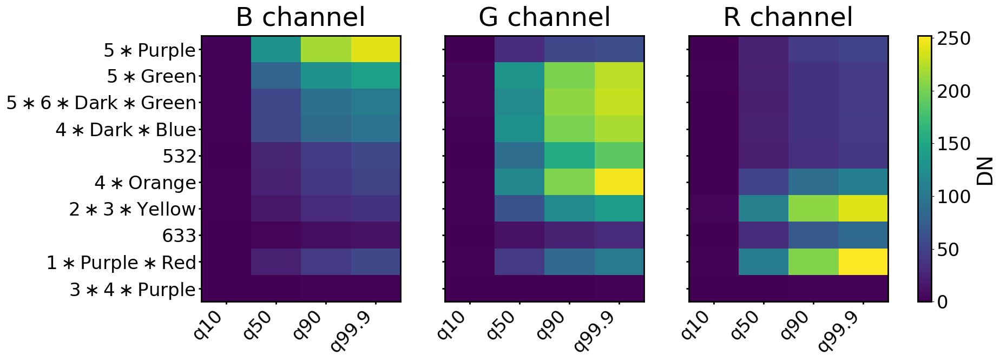
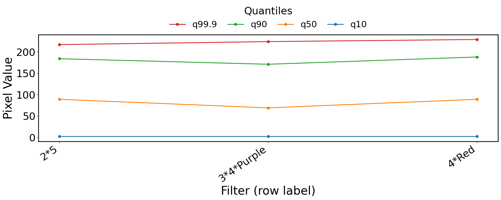
Respuesta espectral relativa final
- VIS presenta la estructura esperada de tres lóbulos (B-G-R) coherente con sensor Bayer.
- NIR presenta respuesta unimodal dentro de 820-840 nm.
- En NIR, la dispersión entre puntos fue baja (CV ~5.5 %) bajo irradiancia controlada.
- Limitación metodológica: respuesta integrada por banda (no estimación absoluta puntual).
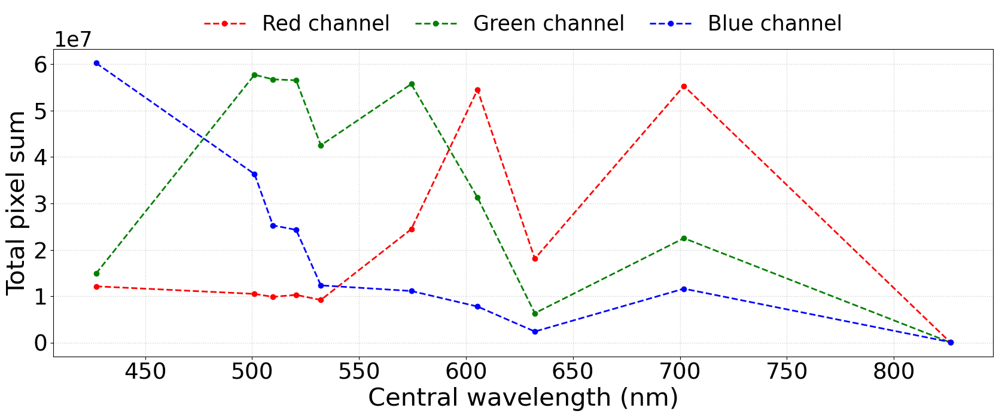
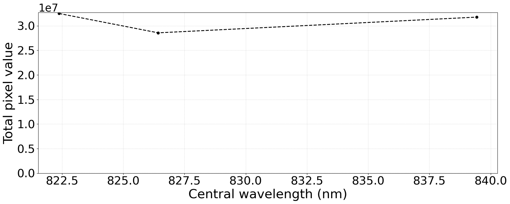
Cierre de requisitos del capítulo
| Requisito | Meta | Resultado |
|---|---|---|
| Masa payload | <= 2 kg | 1.81 kg |
| Costo materiales | <= 1500 USD | 1318 USD |
| MTF mínima | >= 40 lp/mm | VIS/NIR > 70 lp/mm |
| Resolución @50 m | <= 7.35 cm | VIS 4.28 cm / NIR 4.12 cm |
| Curvas espectrales VIS/NIR | Consistentes | Cumplido (relativo) |
| Radiometría absoluta | Trazable | Pendiente |
- Resultado central del Cap. 4: desempeño geométrico y espectral relativo validado.
- Brecha para cierre completo de tesis: calibración radiométrica absoluta con trazabilidad metrológica.
6. Conclusiones y cierre (Capítulo 5)
Contribución integral de la tesis
- Se consolidó una ruta completa de ingeniería: requisitos -> diseño -> procura/integración -> validación en campo -> caracterización óptica/radiométrica.
- El sistema HuMath QBee responde al problema central con una carga multiespectral VIS/NIR ligera, robusta y desplegable en plataforma aérea C3.
- El trabajo deja evidencia cuantitativa para disminuir incertidumbre técnica en iteraciones futuras del proyecto.
Conclusión del Capítulo 2: diseño óptico trazable y replicable
- Se compararon 8 configuraciones VIS/NIR bajo compromisos de MTF, FOV, masa y costo.
- La selección final (ópticas 8.5 mm VIS y 8 mm NIR con sensores Alvium 1800) cumple metas para 50 m a 5 km.
- El análisis paramétrico mostró (_{}) desde ~1.9 cm (baja altura) hasta ~3.5 m (mapeo de gran cobertura).
- La trazabilidad evitó sobre-diseño y dejó una plantilla reutilizable para futuros cambios de misión/sensor.
Conclusión del Capítulo 3: factibilidad de integración y robustez operacional
- La procura y construcción confirmaron viabilidad técnica de la solución seleccionada.
- Se integraron sensores Alvium U-500c (VIS) y U-501m (NIR), carcasas PET-G, filtros y montaje modular.
- Se alcanzó una masa de 1810 g (incluyendo cableado y herrajes), dentro de la restricción del proyecto.
- Las pruebas (banco prolongado, maniobras de hasta 4g, y operación cercana a 0 C) validaron robustez mecánica y de adquisición.
- Se identificaron mejoras necesarias: aislamiento térmico, atenuación ND y watchdog de buffers.
Conclusión del Capítulo 4: caracterización óptica y radiométrica relativa
- El canal VIS conservó la firma esperada de tres lóbulos RGB; el canal NIR mostró banda suave centrada en 820-840 nm.
- El protocolo (irradiancia controlada + sustracción de dark frame + repetibilidad estadística) separó ruido de atenuación por filtros.
- Se obtuvieron curvas de responsividad relativa útiles para normalización de campañas de campo.
- Brecha técnica para cierre metrológico: calibración absoluta con referencia AM1.5G, linealidad vs irradiancia y presupuesto formal de ruido.
Estado de madurez y cierre de objetivos
| Objetivo de tesis | Estado | Evidencia principal |
|---|---|---|
| Diseño y selección óptica | Cumplido | Evaluación de 8 sistemas y selección final VIS/NIR |
| Integración de hardware | Cumplido | Payload 1.81 kg funcional en plataforma C3 |
| Validación operacional | Cumplido (preliminar avanzado) | Ensayos en tierra y vuelo con exigencia dinámica |
| Caracterización espectral | Cumplido (relativo) | Curvas VIS/NIR consistentes y repetibles |
| Trazabilidad radiométrica absoluta | Pendiente | Requiere calibración con fuentes y patrones trazables |
Trabajo futuro (Capítulo 5): hoja de ruta en 3 fases
| Fase | Enfoque | Entregables |
|---|---|---|
| 1 (corto plazo) | Calibración radiométrica absoluta | Ganancias, linealidad, SNR y ruido vs irradiancia con referencia ASTM G-173 (AM1.5D/AM1.5G) |
| 2 (mediano plazo) | Validación operacional extendida | Vuelos georreferenciados, análisis de vibración, sincronía VIS/NIR, ortomosaicos y cubos multiespectrales |
| 3 (largo plazo) | Escalamiento de pipeline y arquitectura | Flujo reproducible (calibración + corrección atmosférica + productos biofísicos), integración IMU/GNSS y expansión a nuevos filtros/SWIR |
- Proyección estratégica: evolución hacia una variante HuMath Space Bee para escenarios orbitales.
Cierre
- La tesis entrega un sistema funcional y un marco de decisión técnico para su evolución.
- El aporte principal no es solo el prototipo, sino una metodología replicable para instrumentación multiespectral nacional.
- El siguiente salto de valor científico está en cerrar calibración absoluta y campañas operacionales de mayor escala.
7. Agradecimientos
- A mi familia, por su apoyo y cariño incondicional durante todos estos años.
- A mis amigos, por su compañía y escucha en los momentos difíciles, y por los grandes instantes de diversión, música y aventura.
- A mi amiga, socia, compañera y directora académica Olga Lucia Quintero Montoya, por su confianza, apoyo en este proyecto y valiosas lecciones de vida.
- A la Fuerza Aérea Colombiana, por su disposición para probar las Abejas en sus aeronaves, especialmente al comandante del Comando Aéreo de Combate No. 2 y 5, Alejandro Vélez Ospina.
- A mis compañeros de trabajo y amigos Sara, Neyder, Fernando y Pablo, por su soporte diario.
- A Valeria Solórzano Araque y Lisseth Milena Cruz Ruiz, líderes del equipo de manufactura del proyecto C3, por su liderazgo en el diseño CAD de la QBee, sus enseñanzas y su excelente labor.
- A la Dra. Elena Montilla Rosero, por su ejemplo como investigadora y docente.
- A Cristian Lopera Trujillo, por su aporte clave en el laboratorio de óptica.
- Al Dr. Andrés Yarce Botero y al Dr. Alejandro Madrid Sánchez, por su guía durante el proceso de diseño de las Abejas.
- A mis docentes de la universidad, por su disposición y paciencia para enseñarme la metodología del laboratorio de óptica.
- A la Universidad EAFIT y a Ricardo Mejía Gutiérrez (Dir. de Investigación), por brindarme la oportunidad de formarme como magíster en Física Aplicada.